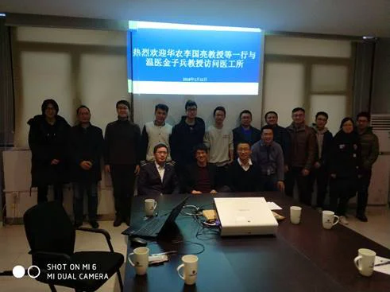
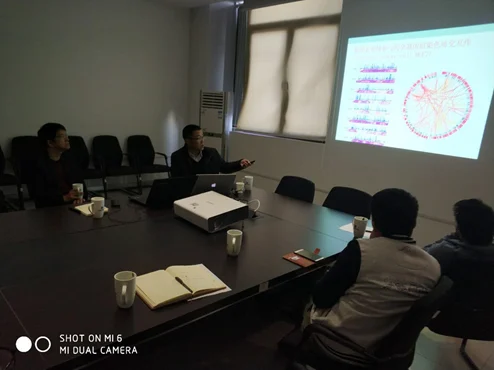
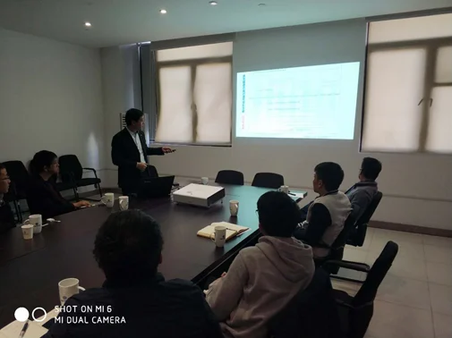

2018年1月11日，华中农业大学信息学院副院长李国亮教授与温州医科大学眼科学二级教授金子兵访问医工所，并在iMED课题组内进行了学术交流活动。
李国亮教授是Genome Biology，Nature Communication等多刊审稿人，三维基因组学分析平台ChIA-PET Tool的开发者。以（共同）第一作者、通讯作者在《Cell》、《Nature Genetics》、《Genome Biology》等杂志上发表论文17篇，共发表SCI文章40多篇。主要研究方向为：生物大数据，生物信息学，三维基因组学，表观遗传学。他分享了题目为《三维基因组学研究与进展》，总结三维基因组学研究的发展，概括三维基因组学研究中的问题和目前的进展，以及我们开发一个新方法。
金子兵教授的研究方向是重大致盲眼病、干细胞与视网膜再生医学。发表第一/通讯作者（含共同通讯）SCI论文40余篇（总影响因子>200），包括2014年以来在国际期刊Nature Communications、PNAS（3篇）、Biological Reviews、Biomaterials、Cell Reports、Genetics in Medicine（2篇）、IOVS（3篇）等中科院分区Top期刊论文，包括ESI高引论文和Research Front等，所发表论文被引1400余次（最高单篇被引200多次）。首次发现“夜盲症”常见致病基因；首次发明视网膜色素上皮细胞新型移植片；首次构建“夜盲症”患者自体干细胞；首次发现儿童高度近视遗传基因。多项成果填补国内国际空白。金教授以《重大致盲疾病的大规模遗传解析》为题分享了多年来在重大致盲疾病遗传方面的研究进展。
最后，在刘江高级研究员介绍了医工所的情况和研究方向，并介绍了iMED课题组在眼科图像处理研究方面的进展，并且深入探讨了合作研究内容与今后合作方向，为今后合作达成共识。随同访问的还有华中农业大学倪福川与罗俊老师。

参会人员合影

李国亮教授做报告

金子兵教授做报告
作者，王浩，毛浩宇